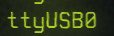

Embedded systems and you
I am strung between many things at this point in my life. Listed as Armed and Dangerous, Fugitive wizard at large. Spending some time in the dungeons and finally getting to have my time before the tribunal was a great time to focus my wildly attention. I feel stronger and sharper as of late. Like I have a direction to follow once again. That direction has been pushing to delve once again into the topics I do not understand.
The dreaded art of Embedded Systems.
Lets thrown on some Time Fragment - 装甲艦 and learn some strangeness.
Getting I had to order from the mages guild some ESP8266's, ESP32's, and some digikey sparks. With my small boards I had to learn about some rather simple but obscure knowledge.
Inscriptions for an inscriber
A small bit of magic works between the main chip on the board and your computer. This might be a CH340 or INSERT OTHER HERE
What these little dude do for you is convert between USB (Your Computer) and Serial (The ESP32, ESP8266 or whatever). This is our friend but we must know which friend we need to learn to speak with. I found out by asking my system.

Using sudo lsusb -t you can get the above. I know I have ch341 that is handling that communication. I can also double check that I am able to see this device by looking in DEV.

Using ls /dev and I can see the ttyUSB0 device which would be present due to the UART to USB CH341 chip.
Arduino the savior for beginning
Moving into the space of we understand our chip and our interface tool. We can now begin to attempt and pass instructions to this chip which should relay that to the ESP8266 in my situation.
yay arduino was all it took for me to install Arduino, if you are not using pacman or yay please find your own solution to this issue.